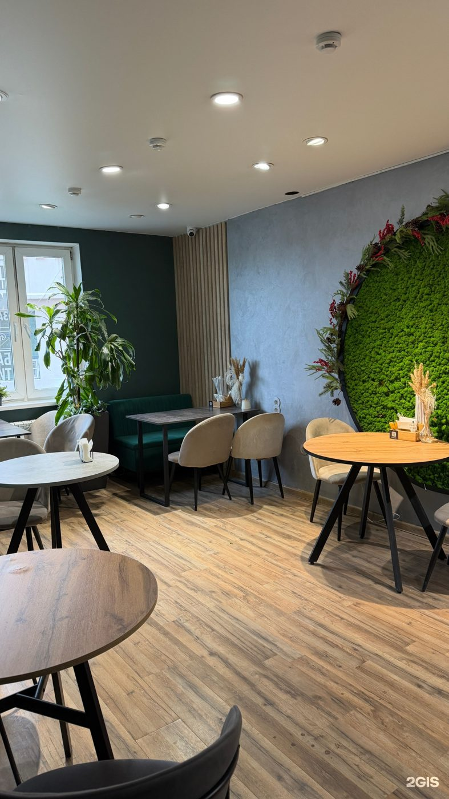

кофейня · Красногорский б-р, 18
Ежедневно с 8:00 до 21:00. Вафли, боулы, поке, вареники и кофе с собой. Средний чек — 700 ₽.
Что в меню
Отзывы · 2ГИС
«Любим с мужем это место. Приходим за вкусным какао на настоящем шоколаде! Бариста всегда приветливая, подсказывает по ассортименту.»
«Очень милая кофейня. Вкусные завтраки. Приезжали из Красноярска на соревнования и проживали в соседнем доме, жаль что нашли это место в последний день. Очень уютное место, особенно зал с детским уголком. Спасибо за вкусный завтрак и за гостеприимность 🙏🏼 Очень милый персонал !❤️»
«Отличное место для любого времяпровождения. Нам нужен был вкусный и питательный завтрак, его мы здесь и нашли. Всё, на мой взгляд и взгляд моих друзей по команде, в этом месте идиально. Сотрудники и лёгкий Ambient делают атмосферу. Выбор напитков и еды достаточно хороший. Мы попр…»